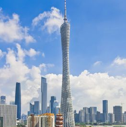

广州
广州
广州，简称“穗”，古称任嚣城、楚庭、番禺 ，是广东省省会、副省级市、国家中心城市、超大城市。 广州位于广东省中南部，东江、西江、北江交汇处，珠江三角洲北部，濒临中国南海，是中国南部战区司令部驻地。
广州塔
广州塔（英语：Canton Tower）又称广州新电视塔，昵称小蛮腰，位于中国广州市海珠区（艺洲岛）赤岗塔附近，距离珠江南岸125米，与海心沙岛和广州市21世纪CBD区珠江新城隔江相望。广州塔塔身主体高454米 ，天线桅杆高146米 ，总高度600米
广州塔是中国第一高电视塔，世界第二高电视塔，仅次于东京天空树电视塔。塔身168米–334.4米处设有“蜘蛛侠栈道”，是世界最高最长的空中漫步云梯 。塔身422.8米处设有旋转餐厅，是世界最高的旋转餐厅 。塔身顶部450~454米处设有摩天轮，是世界最高摩天轮 。天线桅杆455米~485米处设有“极速云霄”速降游乐项目，是世界最高的垂直速降游乐项目 。天线桅杆488米处设有户外摄影观景平台，是世界最高的户外观景平台，超越了迪拜哈利法塔的442米室外观景平台，以及加拿大国家电视塔447米的“天空之盖”的高度。